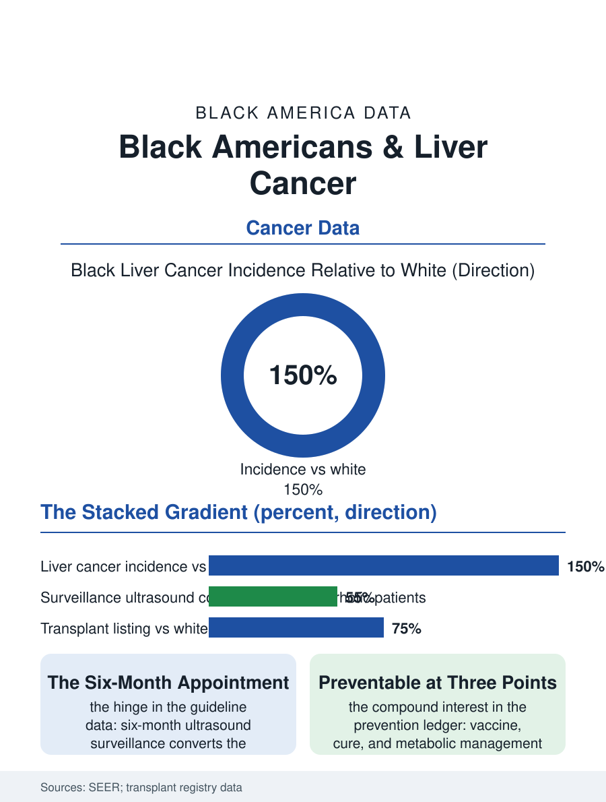

Black Public Health
The Stacked Gradient: Black Americans and Liver Cancer
Stacked causes, missed surveillance, and the transplant list's arithmetic make liver cancer one of the steepest gradients. The liver cancer file.

Liver cancer's incidence in Black Americans runs well above the white rate, and its mortality higher still, a pattern driven by the viral hepatitis file, the metabolic liver disease file, and the transplant list's arithmetic, which together make liver cancer one of the health section's steepest gradients. This article reads the liver cancer file.
The Causes Stack
The epidemiology stacks three causes in the same organ: chronic hepatitis B, whose African-born prevalence the hepatitis file records, chronic hepatitis C, whose baby-boom cohort the same file follows, and metabolic dysfunction-associated steatotic liver disease, the NAFLD file's diabetes-linked fat accumulation, each progressing through fibrosis and cirrhosis to the hepatocellular carcinoma that constitutes the great majority of primary liver cancers. The incidence data place Black men and women above the white figures in the SEER registries, with the foreign-born and the Southern cohorts contributing the hepatitis components and the metabolic component rising on the obesity and diabetes files' trajectories, so that the causes' stack predicts the incidence's future as the hepatitis cohorts age and the metabolic cohort expands. The surveillance file is the file's hinge: the guideline-recommended ultrasound screening of the cirrhotic patient, performed at the interval the guidelines specify, converts the cancer's story from the symptomatic presentation, the pain and the weight loss and the already-advanced tumor, to the small lesion's ablation or resection, and the surveillance delivery data show the Black cirrhotic patient screened at lower rates in the specialty and safety-net systems alike. The surveillance of the viral carriers without cirrhosis is the file's earlier chapter still being written, the risk scores that now select the ultrasound's candidates from the hepatitis clinic's rolls being calibrated, once again, on cohorts whose composition the audit is only beginning to examine.
The Transplant's Arithmetic
The curative options file is the liver's own: resection for the fit liver, ablation for the small tumor, and transplantation for the cirrhotic patient with the contained tumor, each gated by the organ's allocation rules and the center's geography in the pattern of the organ file's. The transplant list's data show the Black patient's position as the compound of the listing rate, the exception score's calibration, and the wait's mortality, with the allocation policy's revisions over the recent era, the acuity circles and the exception reforms, moving the listing and transplant rates in the registry's published direction while leaving the geographic concentration of the centers as the residual gate. The systemic therapy era's drugs, the targeted and immunotherapy regimens of the current decade, extended the advanced disease's survival in the trial populations in which, per the trials file, the Black enrollment was thin, so that the real-world effectiveness in the population bearing the burden is the file's open measurement. The palliative file is correspondingly central: the advanced liver cancer's course, measured in months, is where the hospice and symptom systems the health section's other files describe are most exercised, and their distribution by race is the file's closing equity variable.
Prevention's Compound Interest
The liver cancer file closes on the prevention ledger, because this cancer is among the most preventable of the lethal ones in the file's arithmetic: the hepatitis B vaccine, the hepatitis C cure, and the metabolic disease's management are the three interventions that pay, over the decades, in the cancers not formed, and each is itself an access file this atlas has counted. The current surveillance and treatment improvements are the file's secondary prevention, the lesions caught small and the transplants allocated more fairly, whose registry data will show whether the incidence gradient's future bends. The registries count the cases each year, the Black rate above the white and the mortality's multiple wider. The file's last entry is the cirrhotic patient's ultrasound appointment, the six-month interval on the calendar that decides, in the data's own accounting, whether the next entry in the chart is an ablation or a eulogy, and whether the appointment's system reached the patient whose causes the whole atlas had stacked against him from the day the hepatitis was missed. The calendar, in the end, is the treatment's first ingredient, and the interval's keeper is the clinic's recall system, whose reliability the patient's survival quietly audits twice a year.
More in Black Public Health
Hypertension Among Black Adults: Prevalence, Control, and Consequences
About 55 percent of Black adults have hypertension — the highest rate of any U.S. group. Prevalence, onset, control, and the stroke, heart, and kidney consequences in the data.
Diabetes Among Black Adults: Prevalence and Complications
Nearly one in five Black adults has diabetes, diagnosed or undiagnosed — and its complications fall with particular weight. The CDC data on prevalence, control, and outcomes.
Black Life Expectancy: The Gap at Birth and Its Causes
Black life expectancy at birth is about 73 years, roughly five years below the national figure — the summary measure of every health gap in this section. The CDC data.
Source: National Cancer Institute SEER program; Organ Procurement and Transplantation Network registry data.